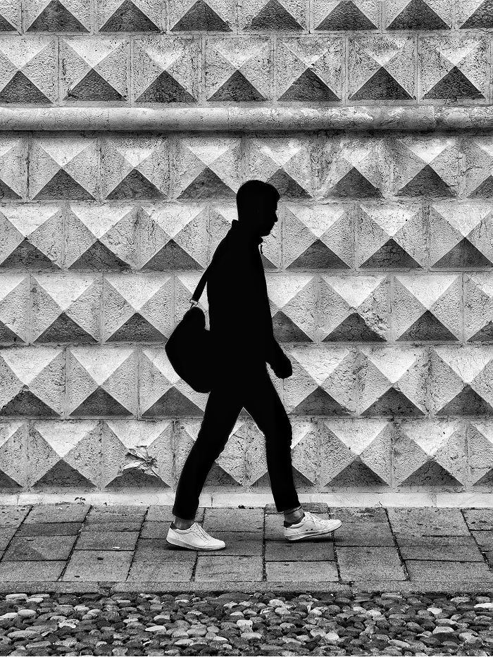
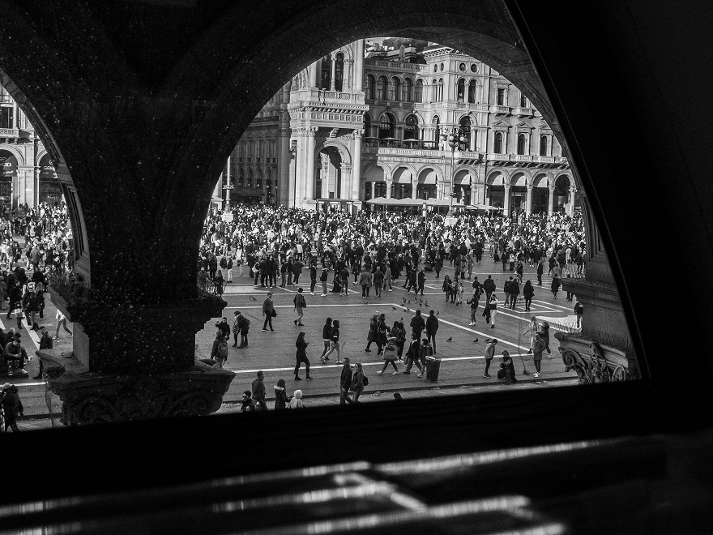
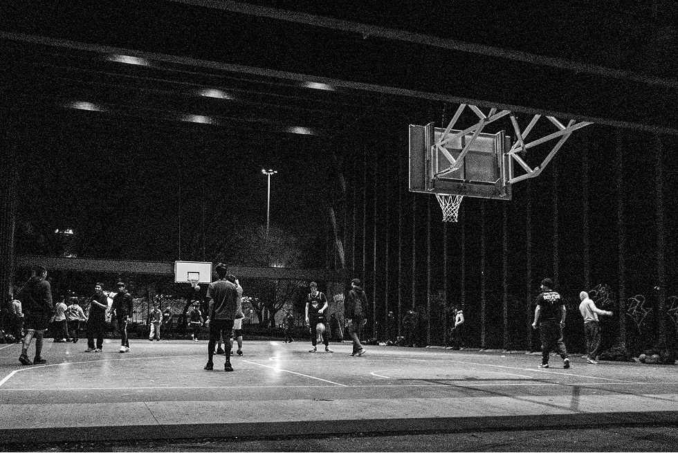
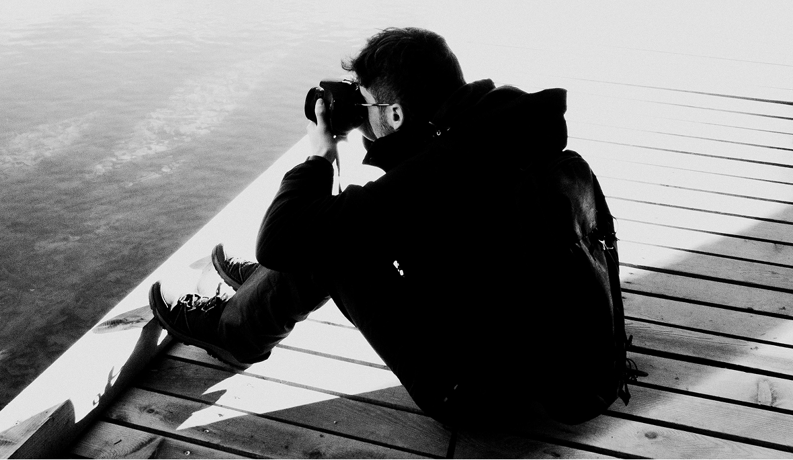
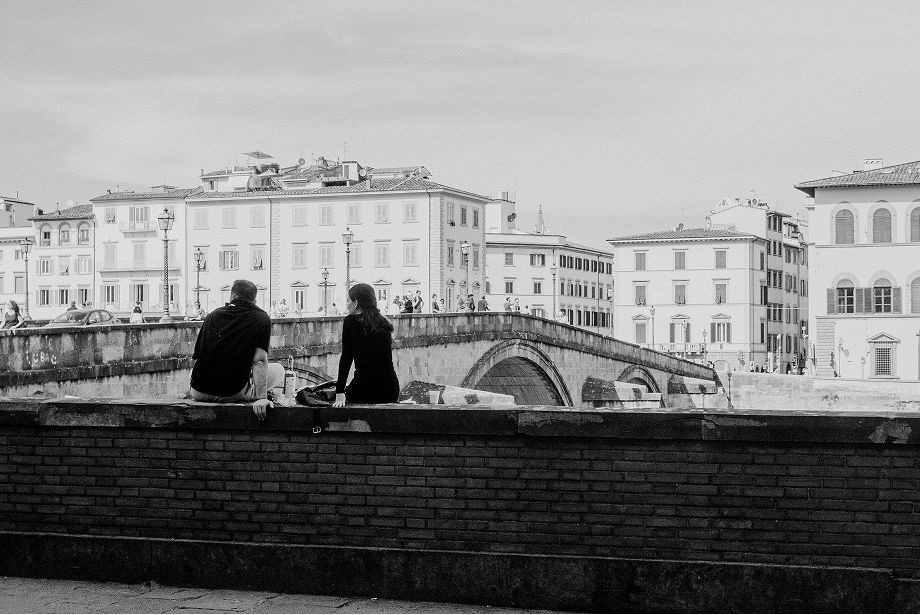
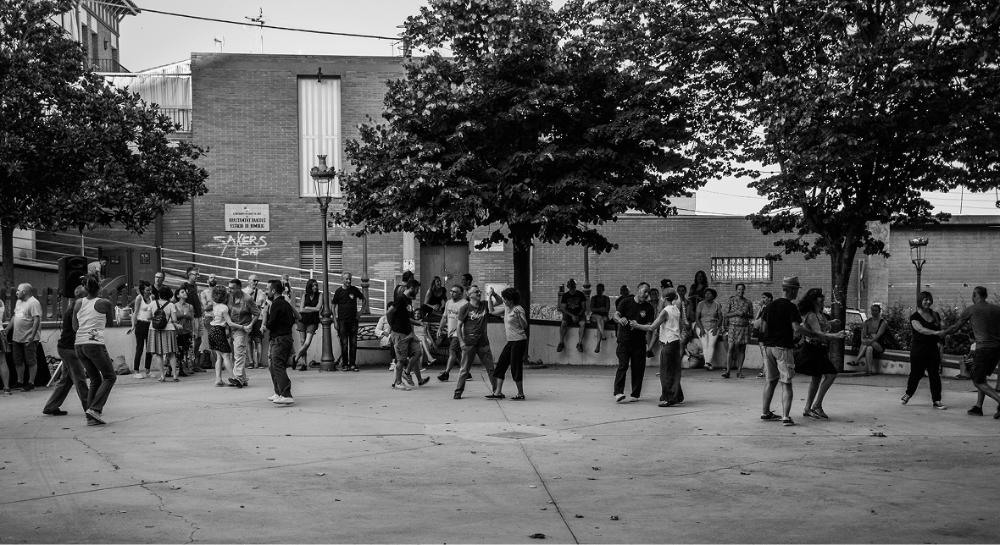

Echos of Italy
'Echoes of Italy' is my lens on the country’s timeless charm...



From sun-drenched piazzas to intimate still-lives, I aimed to capture the soul of the country through light and composition.


